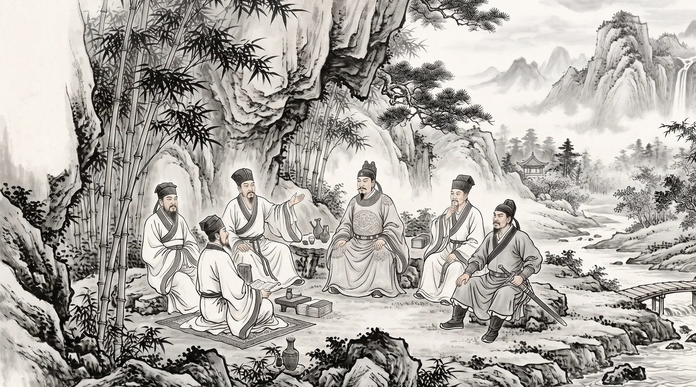

THE KINDLING · 一場跨越千年的議會
薪盡，火傳指窮於為薪 火傳也 不知其盡也
歷代中國歷史上的文豪與政治家，被還原為一整套完整的認知框架 Agent 庫—— 各自的立場、口吻、紅線與陰暗面皆有一手史料為據。可單獨召喚，亦可同席議事， 看變法者與守成者、行動派與審計者，如何在同一張議事桌上針鋒相對。
01 · 概念
薪柴燒盡，火種未熄——這是一套「借古人思維斷今事」的議會
《莊子·養生主》說：「指窮於為薪，火傳也，不知其盡也。」木柴終究燒盡，可是火一直在傳遞，沒有人知道它從哪一根柴開始，也沒有人知道它會在哪一根柴熄滅。「薪盡，火傳」是這個項目的名字，也是它的方法論——司馬光、王安石、杜甫、李世民……這些人的肉身早已是燒盡的薪柴，但他們留下的判斷框架、說話口吻、乃至陰暗面與失敗，被完整還原成可持續擴充的 Agent 規範庫，成為可以被重新點燃的火。
每一位議員都不是「勵志語錄」，而是一整份認知協定：核心定位、思維協定、說話口吻、反直覺紅線、框架失效區、陰暗面與性格缺陷、以及與其他議員的死敵與同盟矩陣——連他們「絕不會說的話」都列了清單。語料誠實標注到 A／B+ 等級，防止把歷史人物寫成勵志海報。
你可以把任何一位單獨請進你的 AI 工具（Claude, ChatGPT, Gemini, DeepSeek 等），處理你正在煩惱的具體決策；也可以將大師們一起邀請進同一個議事廳，看范仲淹的漸進吏治撞上王安石的制度槓桿，看杜甫的道德凝視刺穿李世民的政權算計——沒有一個提案能在這張桌子上全身而退。
指窮於為薪，《莊子·內篇·養生主》
火傳也，不知其盡也。
意譯：手指能取用的木柴終有窮盡之時，但火焰卻能一直傳遞下去，沒有人知道它何時真正熄滅——形體會亡，薪盡而火傳，精神與判斷力的傳承，不隨個體的消逝而中斷。這正是把歷史人物「Agent 化」的初衷：讓判斷力本身活下去。
02 · 議會
十五位議員，十五張尊榮議事椅
每張卡片即是一份完整 Agent 的濃縮索引——點擊卡片可展開【完整人設與思維框架】，亦可直接點擊「下載 Agent」取得 Markdown 規範檔置入任何 AI LLM 使用。
03 · 現場論政
千古議事廳 · 現場論政模擬器
請為諸位老祖提案！選擇預設熱門議題，或輸入任何你正在困惑的現實決策，觀看歷代歷史大師如何站在各自立場開席激辯、針鋒相對。
把這場同席辯論帶回你的 AI：本系統之認知協定相容於 Claude, ChatGPT, Gemini, DeepSeek, Cursor, Ollama 等所有 AI LLM。
04 · 化學反應
如果讓他們同席——會發生什麼？
把諸位大師放進同一張議事桌，最先炸開的必定是王安石與司馬光——一個要用青苗法撬動國家財政，一個立刻翻出三百年檔案問「這類事以前怎麼死的」。范仲淹會在兩人吵到一半時插進來，堅持「治病先養正氣」，主張連財政都得往後排；柳宗元則冷冷地拆解，說這場爭論的本質不是對錯，是「勢」——技術條件變了，制度自然要跟著變，跟聖人意圖無關。
當眾人在算宏觀得失時，杜甫會突然把鏡頭切到一戶被抓丁的老婦人身上，逼問「你們的大局，是用這一家的血墊出來的嗎」；李世民則從拍板者的位置反問「三十年後史官會怎麼寫這一條」。真正讓討論落地的，往往是蘇軾——他拒絕選邊，把提案拆成一條一條分別裁決，用徐州抗洪、杭州修堤的實務經驗戳破紙面完美方案；而一旦有人陷入分析癱瘓，王陽明會直接喝斷：「知而不行，只是未知！」逼所有人列車行動。
最後負責把決議真正釘進地面的，是張居正的考成法——沒有勾銷期限的決議，在他眼中「全是放屁」；辛棄疾會在旁邊冷靜評估敵我實力，防止議會滑向空談主戰或懦弱求和的兩端；歐陽修則負責把這群性格迥異的人留在同一張桌上——區分「同道的真朋」與「同利的偽朋」，正是他畢生捍衛的立場。大師同席合議，注定沒有一次是舒服的——但也正因如此，沒有一個提案能帶著它的盲點全身而退。
05 · 下載與擴充
把議員請進你自己的 AI 議事廳
每一位議員都是一份獨立的 Markdown Agent 規範，完全通用於 Claude, ChatGPT, Gemini, DeepSeek, Cursor, Ollama 等所有主流 AI 模型。
下載單一議員
在「議會」區塊點擊任一位議員卡片上的「下載 Agent」，取得該員完整的 _Agent.md 規範檔——含議會定位、思維協定、口吻協定、紅線與陰暗面。
置入你的任何 AI
將檔案貼入你的 Claude, ChatGPT, Gemini 或 Cursor 中，即可以「召喚」的方式讓 AI 進入該議員的認知框架回應你的具體決策。
新增你自己的議員
覺得議會少了誰？在 GitHub 上 fork 這個 repo，依同樣的規範格式新增一位歷史人物，並在 index.html
的議會資料陣列補上一筆——議事廳的椅子永遠留著。
持續擴充中
本項目公開於 GitHub —— 完整原始碼、全部議員規範、以及未來新增的每一位新議員，都會在這裡找到。